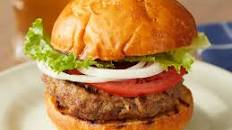

Burger

World Best Burger
These burger patties are made with ground beef and an easy bread crumb mixture. Nothing beats a simple hamburger on a warm summer evening. Pile these burgers with your favorite condiments and pop open a cool drink!
Ingredients
- Ground Beef
- Onion
- Garlic
- Soy sauce
- Dried parsley
- Basil
Steps
- Preheat an outdoor grill for high heat and lightly oil the grate.
- Combine ground beef, onion, cheese, egg, onion soup mix, minced garlic, garlic powder, soy sauce. Use your hands to form the mixture into 4 patties.
- Cook patties on the preheated grill until no longer pink in the center.